(2008-02-18 16:19:16)
走势结构，最重要的就是有中阴部分的存在。
有人可能认为，中阴存在是理论不完善的结果，其实，这是典型的一根筋思维，对于这种思维，世界就是机械的，任何时候都只有一个机械精确的结果，而实际上，世界更多是量子化的，是测不准的，中阴的存在恰好客观地反映了走势的这种特性。
中阴状态的存在，反映了行情走势生长阶段的未确定性，这种未确定性，不会对操作有任何的影响，因为中阴状态都可以看成是一个中枢震荡的整理，根据中枢震荡的操作就可以了。
很多人，一碰到中阴状态就晕，因为这时候，你不能对走势给出明确的划分。
注意，这里不是指同级别的划分，而是一般性的划分。【韶山映山红】不能对走势的自然生长状态给出明确的划分，但是不影响同级别分解的划分。怎么理解呢？这里说的一般性的划分是哪个级别的？同级别的划分又是哪个级别的？】
【韶山映山红】中阴阶段，原来的走势类型结束，新的走势类型不明朗，有几种可能：
１，同级别转折，中阴阶段开始后，不是次级别线段类走势，就是形成同级别中枢的走势，两种都是同一个级别的划分。
２，最后一个中枢扩张升级，要有大中枢的第三段走势，所以和同级别转折的开始阶段一样，只不过新的同级别走势没有延续，而是再一次转折。
３，走出新的大级别中枢，要有大中枢的第一段走势，所以还是和同级别转折的开始阶段一样。
也就是说，不管后面的走势是什么样子的，都要先有一个次级别的走势，不是次级别线段类走势，就是形成同级别中枢的走势，两种都是同一个级别的划分。所以中阴阶段不影响同级别分解的划分。】
例如，一个线段性类上涨类背驰后，必然首先出现一个1分钟的中枢，也同时进入一种中阴状态，【韶山映山红】这里的“同时”是指从背驰点开始的同时，既形成1分钟的中枢，也进入中阴状态。这时候什么走势也说不上，完全的中阴状态，1分钟中枢不是某个走势类型的中枢。★】
但你不能说这走势必然就是1分钟类型的，【韶山映山红】意思是说，可以是任何级别走势的一部分。这个转折点也可能是任何级别的转折点。】
因为，最极端情况下，两个年中枢之间也可以是一个线段连接，甚至就是缺口连接，这在实际上都是完全可能发生的。因此，理论必须包括这些情况，而且这些情况太常见了，并不是一个古怪的问题。【韶山映山红】实际上，缺口也被线段化了。】
另外，根据结合律，连接中枢的走势，并不一定是完全的趋势类型，【韶山映山红】根据结合律，先分解组合出中枢来，然后剩下的才是连接段，所以并不能保证剩下的都是什么，可以是各种类型的走势碎片。】
也就是说，一个线段类上涨后，可能第二类类中枢就消融在中阴状态的那个中枢里了。【韶山映山红】一个线段类上涨，所有的线段都是这个上涨走势的一部分，根据结合律，先分解组合出中枢来，这样就把最后一个类中枢分解出来，组合给中阴中枢，也就是“消融在中阴状态的那个中枢里”。标准趋势背驰的最后一个中枢扩展升级是一回事，也是“消融在中阴状态的那个中枢里”。】
也就是说，a+b+c+d+e+f=a+b+c+（d+e+f），
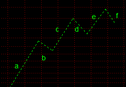
a+b+c+d+e是一个线段类上涨，c+d+e的重合部分构成最后的一个类中枢，
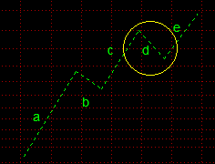
f是类背驰后的回调，这时候，就可以马上构成一个1分钟的中枢，
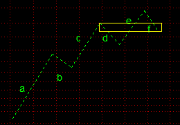
然后后面直接继续上涨，构成1分钟的上涨是完全合理的。因为，最终的划分，就必须把a+b+c+d+e给拆开了。【韶山映山红】（a+b+c+d+e）+f = a+b+c+（d+e+f）】
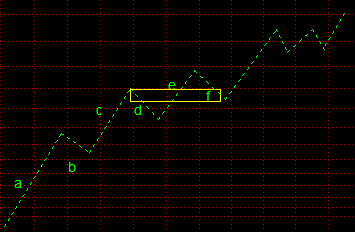
因此，一般划分中，如果中阴状态中从前面的背驰点开始已经构成相应的中枢，例如在a+b+c+d+e+f后又有g\h，f\g\h构成1分钟中枢，那么整个的划分就可以变成a+b+c+d+e+（f+g+h），这样，原来的线段类上涨就可以保持了。【韶山映山红】中阴中枢出现时，先划分中阴中枢，以便于走势方向的判断。中阴中枢没有给出方向，只是延伸，就是中阴状态的延伸，这时候就做中枢后移，恢复中阴状态前的连接段状态。】
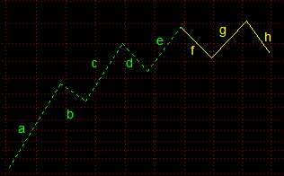
如果后面包括d+e+f延伸出9段，然后又直接上去了，划分中，必须首先保证5分钟中枢的成立。【韶山映山红】中阴状态一直在延续，还是a+b+c+d+e的趋势背驰带来的，所以还是不能摆脱被摆布的命运。中阴状态的延续导致中阴中枢升级，还是同样的原则，根据结合律，先分解组合出中枢来，然后剩下的才是连接段，所以又要先保证5分钟中枢的成立，然后有条件再去保证连接段完美。这里的前提是“然后又直接上去了”，也就是三买结束中阴状态，使得中枢成立，否则，如果是三卖先出现，就只是中阴中枢的9段延伸，而不一定是走势类型中枢的9段延伸。】
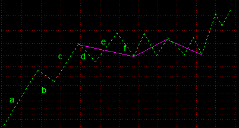
换言之，划分的原则很明确，就是必须保证中枢的确立，在这前提下，可以根据结合律，使得连接中枢的走势保持最完美的形态。【韶山映山红】什么是“最完美的形态”？★趋向走势必完美。】
由此可见，因为划分中的这种情况，我们就很明确地知道，走势的最大特点就是，连接中枢的走势级别一定小于中枢，换言之，一个走势级别完成后必然面临至少大一级别的中枢震荡。例如，一个5分钟的上涨结束后，必然至少要有一个30分钟的中枢震荡，这就是任何走势的必然结论，没有任何走势可以逃脱。【韶山映山红】前提是，前面走势真的完成了。因为，完全可以只是本级别的转折、然后走出本级别的线段类趋势。而且，大一级别的中枢震荡不一定马上出现。另外，这里说的“至少大一级别的中枢震荡”首先是指中阴阶段的中枢震荡，不一定还有后续的大级别中枢震荡。】
有了这个必然的结论，对于任何走势，其后的走势都有着必然的预见性，也就是其后走势的级别是至少要大于目前走势的级别。【韶山映山红】问题是，大级别的中枢震荡，什么时候开始后面的小级别连接段的？★】
这里，一个很关键的问题就是，这个大的走势级别的第一个中枢震荡的位置，极为关键，这是诊断行情的关键。【韶山映山红】每一次升级都有这个问题。大级别走势的第一个中枢在小级别高位中枢才健康。】
首先，任何一个后续的更大级别中枢震荡，必然至少要落在前一走势类型的最后一个中枢范围里，这是一个必然结论。【韶山映山红】否则就继续向下了。】
换言之，只要这中枢震荡落在最后一个范围里，就是正常行为，就是正常的，也就是说，这种中阴状态是健康的。【韶山映山红】所谓正常，就是一般，中规中矩。换句话说，有健康的，就有不健康的。】
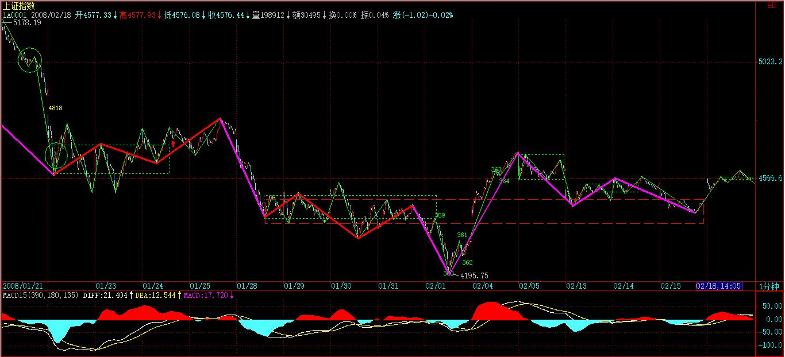
但，一旦其中枢震荡回到原走势类型的第二甚至更后中枢里，【韶山映山红】这里的“第二”、“更后”都是倒数的。】那么，对应的中阴状态就是不健康的，是危险的，【韶山映山红】震荡就会变盘。在第一个中枢震荡，只是破坏了中枢，进一步震荡到“第二甚至更后中枢里”，就开始破坏原来的整个走势了。破坏级别不一样。】而原来走势的最后一个中枢，就成了一个关键的指标位置。【韶山映山红】原方向、反方向，都以此为判断基础。】
注意，危险是相对的，对于原下跌走势的中阴危险，就是意味着回升的力度够强，对多头意味着好事情。【韶山映山红】无所谓涨跌，只要是变盘就是危险。原方向走势延伸就不危险。】
结合分型，例如，一个日分型的出现，意味着笔中对应的小级别走势里出现大的中枢，【韶山映山红】这个“大的中枢”一般都是中枢分析角度的大中枢，而不是走势类型分析角度的大级别中枢。更准确地说，是那个当下的中阴中枢。】因此，这个分型对应的中枢位置，就很关键了，这几乎决定了这分型是否是最后真正的顶或底。【韶山映山红】所以简单的分型分析就以分型的区间范围为参照物。】
【韶山映山红】最后一段才又拉回到分型和笔的分析，对应了课文标题的“走势结构的两重表里关系”。前面讲的是大周期Ｋ线图上的分型、笔与小周期Ｋ线图上分型、笔的关系，这里讲的的是大级别分型、笔和小级别走势类型分析的关系。】
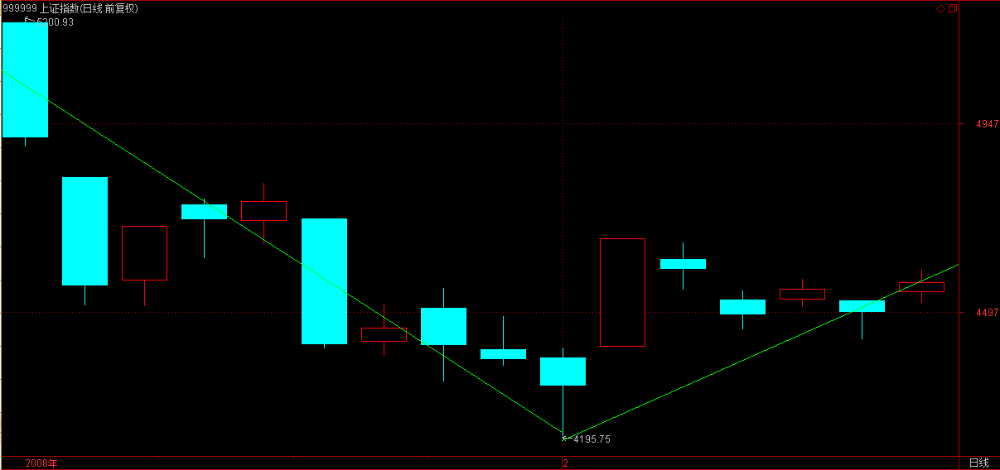
(2008-02-19 15:16:27)
昨天说了，今天要经受CPI公布的考验，结果大盘一直围绕4575的中枢震荡，CPI公布后也依然不变，下午更向上偏移，显示了最近少有的强势，【韶山映山红】这里看1分钟中枢的离开，离开段a+A盘整背驰，离开段内部没有线段类盘整背驰。】
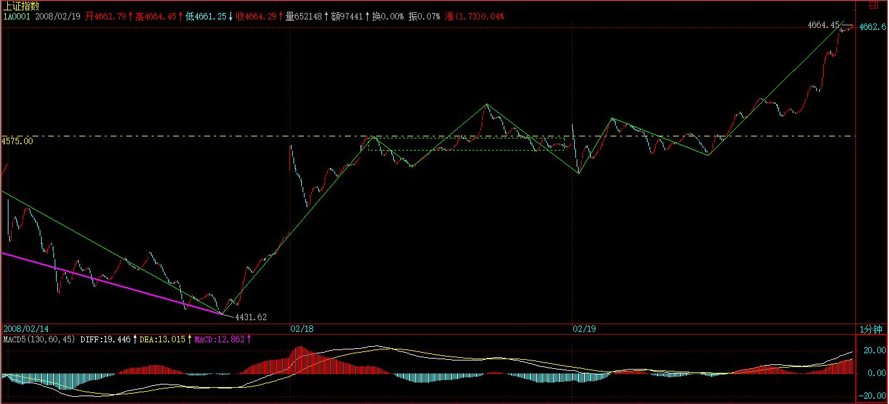
【韶山映山红】这里看5分钟中枢的离开，离开段a+A盘整背驰。】
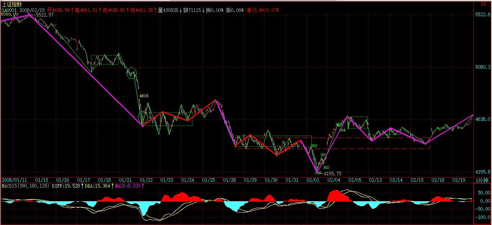
最后一小时，就是中石油的表演，该股也如期回补前几天的缺口，但由于该股最近的大中枢并没有有效突破，所以这个回补只有震荡的意义，暂时不能给予太高的技术评价。
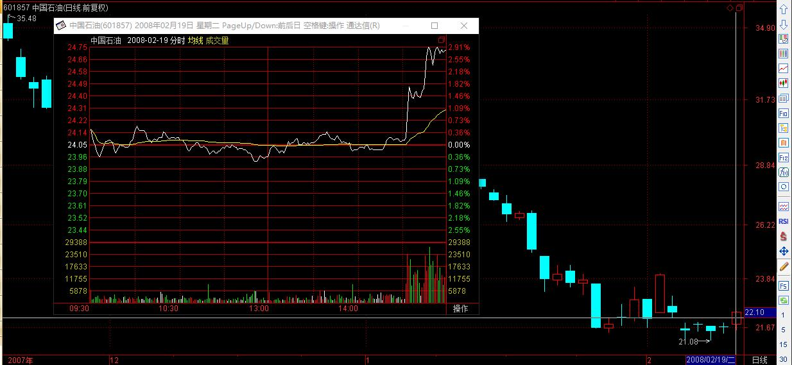
显然，今天的走势，使得MACD的红柱子继续延伸，
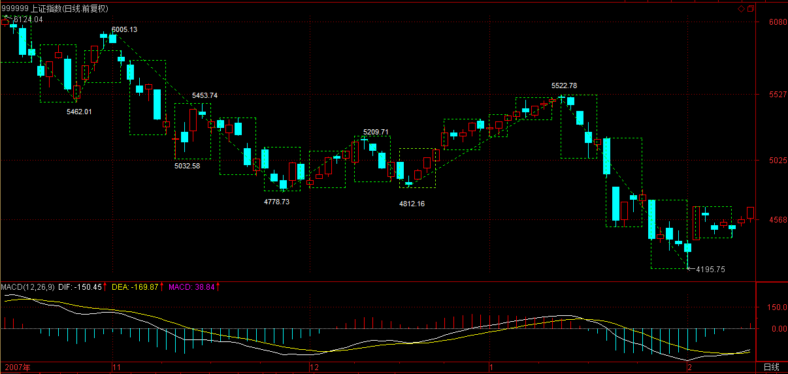
而从4431点的回升，目前已经至少是1分钟走势类型的，第一个中枢在4575点上下，后面就看能不能在其上形成新的中枢，如果行，就继续强势。【韶山映山红】这里的中枢在这时候应该重新划分如下。】
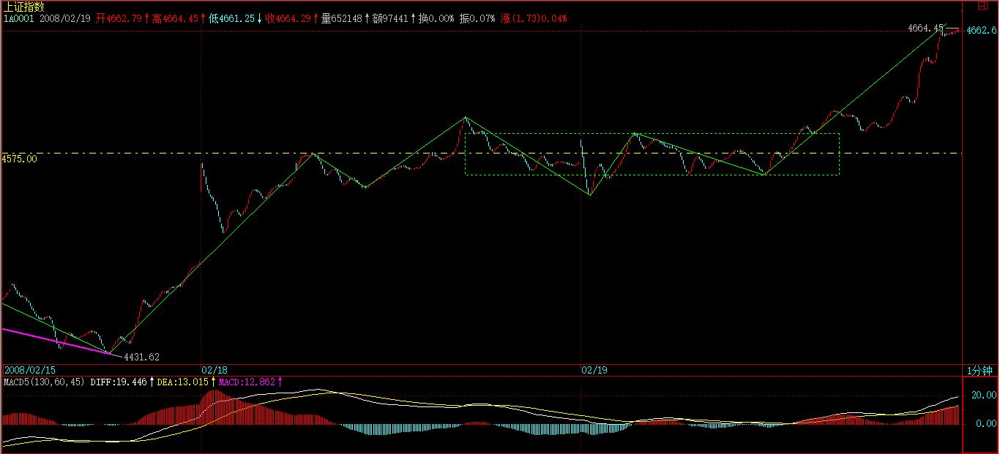
4672点是第一回升的高点，因此，最强的走势，就是新中枢至少围绕该点位形成，甚至在其上形成，这样，大盘走势的可拓展性就大大加强了。【韶山映山红】“新中枢”是指期盼着的1分钟的第二个中枢。】
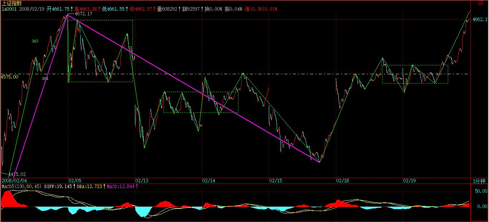
当然，站在本ID理论的角度，由于这次的底分型范围的上沿也在4672点，所以4195点上来的走势最终是否延伸为笔，关键也在4672点的站稳。【韶山映山红】2008.02.01的4195为底的底分型，右侧元素的高点是4672点，所以形成笔的合格顶分型需要高于4672点。】
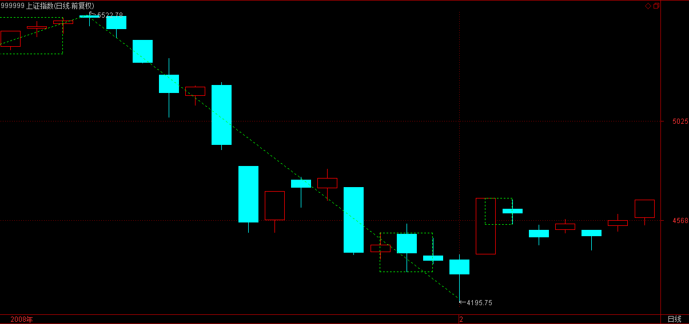
因为笔的最基本条件就是顶和底分型之间必须有不重合的部分，1月23日那个底分型，就是因为后面不能突破站住1月22日高点4818点，所以使得不可能延伸为笔，进而原来的向下笔继续延伸，形成后面的下跌。【韶山映山红】这里明确了“顶和底分型之间必须有不重合的部分”指的是顶底分型的区间，而不是顶底分型的K线。】顶在底中、底在顶中的实例。顶分型和底分型之间必须有不重合的部分。】
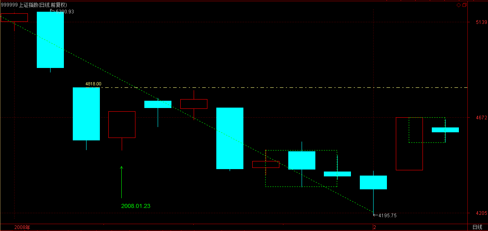
因此，从最技术化的角度，4672点是一个关键的位置。
不过目前短线最大问题，还是板块行情没有被点燃。靠中石油可以突破，但不能把人气激发，所以，后几天能否激发出板块行情，将是行情能否有力度延续的关键。
先下，再见。
(2008-02-19 15:59:06)
人身难得，因此，使得人身尽其天年，是每个人都应该做的。而影响这个目标的，一个很大的因素，就是病了。
那么，病从何来。
当然，穷根究底地说一句：病从妄想而来。不过这样一句，估计能接受的人多不了，所以还是说点浅的，病都从五蕴而来。也就是从你的色、受、想、行、识的聚集而来。
一般来说，所谓的医生，无论西医中医，都只知道色、受、想而来的病，行、识所生的病，并不是他们所能知道的。当然，行蕴最粗浅方面的病，最好的中医是可以面对到的，但估计现在这种医生也没几个了。
幸运的是，一般我们日常的病，都是从色、受、想而来，就算是很多的所谓不治之症，也都是如此。
病，本质上是不需要治疗的，也是不可治疗的。为什么？所谓的病，是众缘和合而生，要治的不是病，而是这众缘和合而生的大环境。
在这点上，中医比西医高明得多。中医本质上不治病，只调理人体。因为病是众缘和合的，只要把这其中的最重要的环境给改变过来了，这病自然就没了。
病不是上帝式的，是有条件的，攻击病本身，只是攻击一个幻影，这就是西医爱干的事情。例如，见一个瘤子，西医就要割了、化疗了，但这瘤子，只是众缘和合的产物，产生它那些缘不了，割了、化疗了都是白折腾。
而中医，他就是要用药去调节这个众缘，也就是这个色、受、想。对于西医来说，病人只是一具尸体，而对于中医，病人就是那高山流水要会的知音，医生和病人，一起才有这高山流水的美妙。
中医的妙曲，是医生和病人一起和合而生的。
(2008-02-20 15:27:33)
5200点那次，平安的增发成了最后的稻草，今天，又来了一个浦发的增发，虽然不是正式的消息，已经足以让大盘回头。【韶山映山红】市场传闻浦发银行将再融资400亿元，结果该股以跌停报收，而且整个银行板块出现放量下跌的走势。】
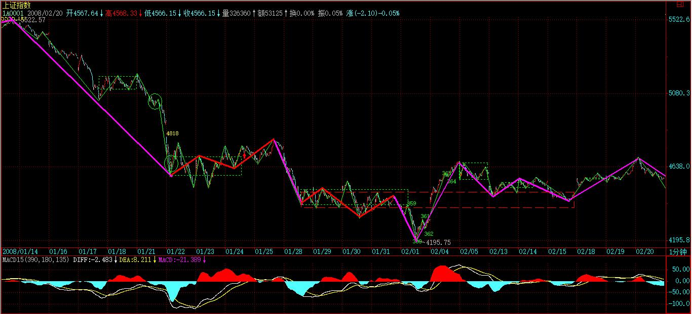
现在的多头，必须如利物浦一样去战斗才行。三个手球不算，熬到最后一刻才把最后的纸给破了。现在，基金的新发，等于把空头一个人给罚下了，但要灭空头，没点耐心是不行的。今天这增发闹剧，等于一个手球不算，估计这不算的手球，还少不了。不熬到85分钟以后，胜利的希望是看不到的。
技术上，这1分钟的上涨肯定是没戏了，【韶山映山红】中枢盘整背驰后的下跌回到中枢区间。】
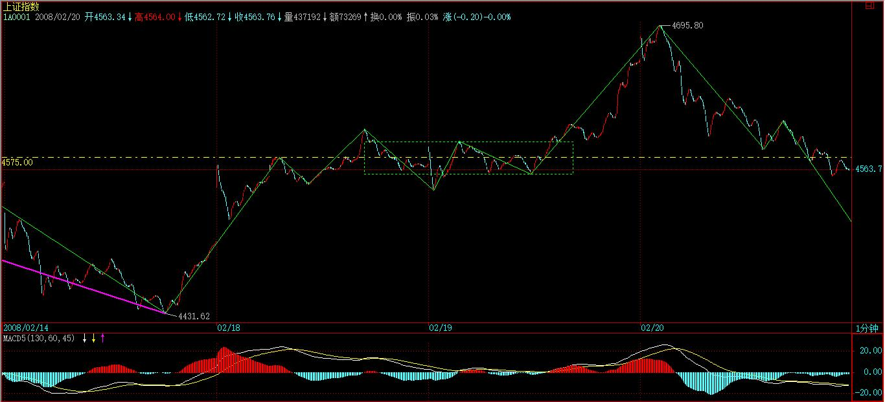
这里最好的情况，就是震荡出一个5分钟的中枢，看能不能搞成5分钟的上涨，注意，这是最好的情况。最坏的情况，当然是4575点附近的震荡后出现第三类卖点，这样就重新探底。
中线上，4672点站不住，真正的行情就不会展开，依然是继续的震荡走势，等于今早前85分钟的闷战。
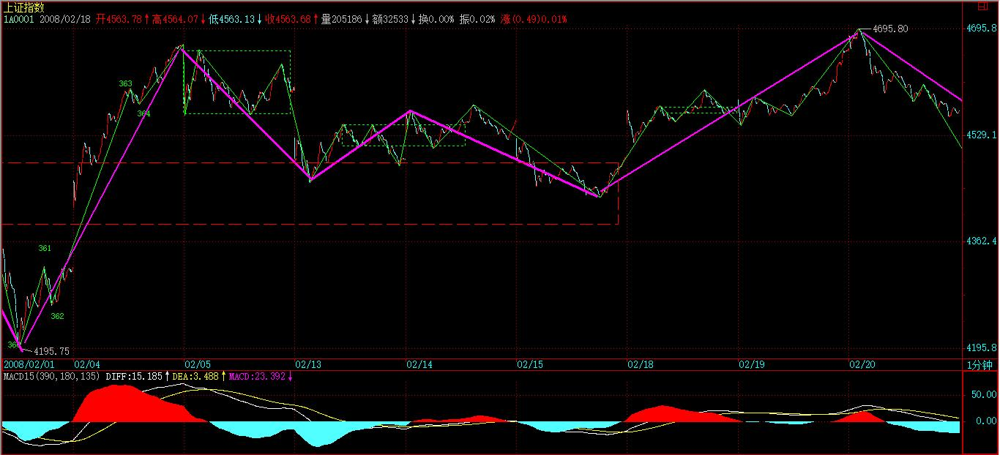
多头需要第一个进球，这进球，必须来自板块的启动。
本ID一直强调的农业股，现在已经是整体走强，600737更是无耻地又新高了。【韶山映山红】600737新疆屯河，2007.03.07中粮屯河，2017.02.17中粮糖业。】
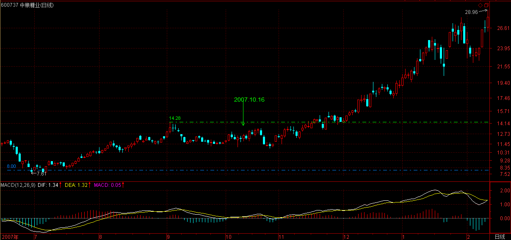
这板块能否带动化工等，逐步把热点蔓延，这是后面需要留意的。有时候火点起来了，蔓延不起来，那只好偃旗息鼓，等机会再来，这种事情也是经常发生的。
前面说了农业，环保新能源，化工，这都很好理解。
至于消费消耗品类的，这其实是中国最大的优势，就是各种消耗品，例如吃的，包括调味品等等；【韶山映山红】600186莲花味精，2016.01.15更名莲花健康。603005恒顺醋业。】
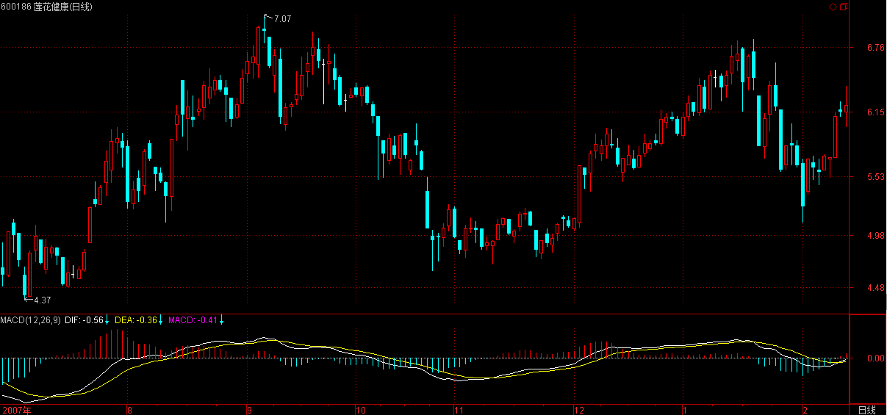
用的，用的包括很多方面，例如汽车发展了，汽车的配件如轮胎、玻璃之类的，反正是整天要换要用的。
中国什么多？就是人多，消耗多，这是永恒的题材。
酒类，只是其中很小的部分。
中线真的突破时间，可能真要如前面所说，等到3月那会后了，所以一定要耐心。【韶山映山红】2008年3月全国两会。】
最主动的做法的，就是追逐最强势的板块；
最稳健的做法，就是逢震荡低吸那些有中线潜力且刚启动的，如高送之类。
580989。现在是完全和大盘对冲着搞，中枢上的风险就开始加大了，当然，如果大盘破位，那会有一次冲动的过程，不过风险很大，一般人看看就算了。
先下，再见。
(2008-02-20 16:27:15)
环境保护、生态平衡已经是世界性的大问题，而资本市场，也同样存在一个环境保护、生态平衡的问题。在资本市场上活动的各种力量，之所以能存在一个系统中，就是之间有一个基本的协调关系，而一旦这个关系被打破了，这个资本市场的大系统就会出现生态危机。而一旦出现生态危机，这资本市场要恢复元气，那就不是一朝一夕的事情了。
对于中国这初生的资本市场，其生态系统本来就极为脆弱，因此，期间的生态平衡，必须有些人为的引导，而这种人为的引导，在该系统充分发育后将逐步减少。因此，对于管理层来说，有意识地对资本市场的生态系统进行环境保护，是其最为重要的任务。因为对于管理层来说，其业绩的好坏，完全依赖于资本市场系统运行的顺畅与否，一个导致资本市场生态灾难的决策，无论如何都不可能是及格的。
资本市场的生态平衡的维护，是有时间性的，一些决策也因此带有时间性。例如，目前的环境下，一个资本市场中的大力量，通过强力的圈钱活动对资本市场的资源进行过度开发，这样的事情，就绝对是不合时宜的，一旦蔓延，必要要造成生态灾难。
环境保护，很重要一点，就是要对资本市场的市场资源进行合理、适度的开发，禁止乱砍乱伐，更不能允许那些无证小煤窑或受到地方以及其他保护势维护而非法开采的煤老大到处横行，这些资源是属于全中国人民的，没有人有资格随意浪费或为自己的利益而干苟且之事。
其实，世界上的道理都很简单，资本市场的事情也很简单，不简单的都是利益。有了利益，一切简单的事情就复杂了，现实中的环境保护所遇到的问题如此，资本市场上的问题也是如此。
因此，要最终解决问题，就是一定要砍断这利益的背后黑手，这大概才是问题的关键。
(2008-02-21 15:18:25)
各位元宵好，晚上过节，就没帖子了，抱歉。
今天，昨天的传闻被证实了，在现代社会，空穴来风的事情很少有，特别在资本市场。【韶山映山红】浦发银行确认公开增发计划 金融股昨集体跳水。】
指数勉强地维持了4575点的中枢震荡，这5分钟中枢是确定了，【韶山映山红】“这5分钟中枢”是中枢分析的中枢，不是走势类型分析的中枢。★】
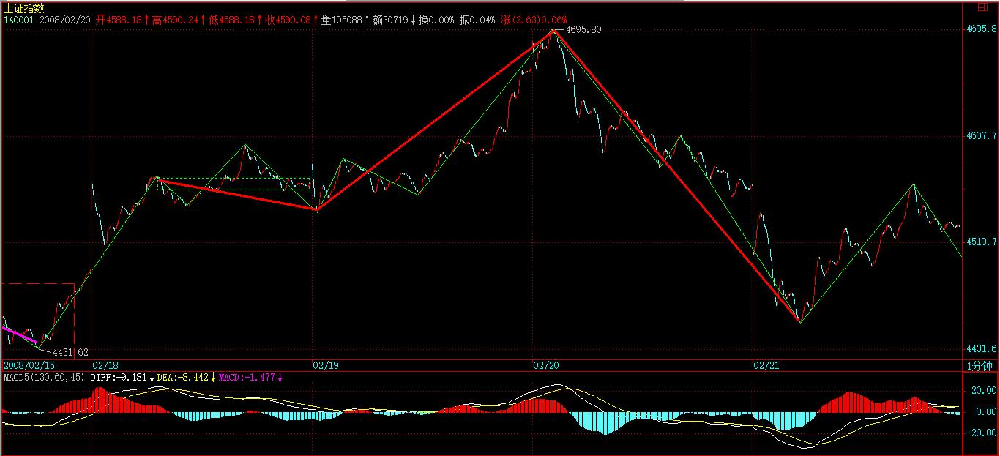
后面的关键是第三类买卖点的问题。
由于大家伙都爱狮子开大口，所以大家只好避而远之，指数折腾不出花样，并不意味赚钱的机会少了，赚钱是靠个股而不是指数。在去年的展望中已经明确说过，今年是题材股的天下，而目前，正如昨天所说，就要到处点火，把板块激荡起来。
今天，从创投到化工、医药、新能源等等，都被点了一次，这板块轮动是否能起来，现在还不好说，因为现在人为因素很大，但如果光是点火的人忙乎，最终是燎原不了的。燎原不了，那点火的人就白忙了。
指数，最悲惨的就是再砸一次底，
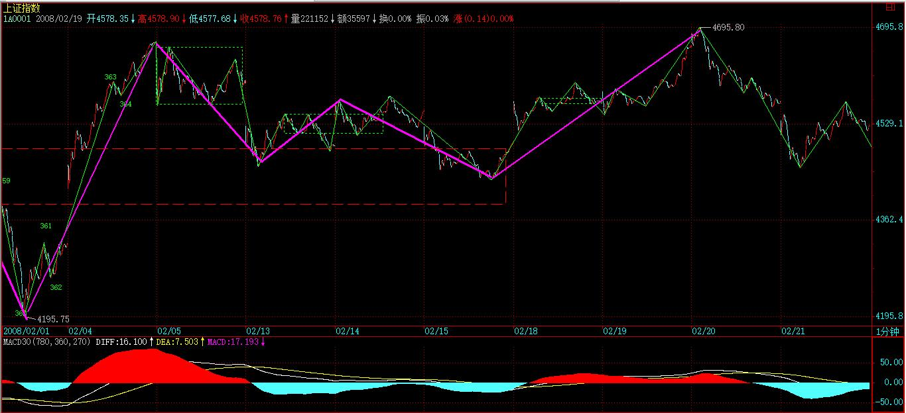
但估计有题材的股票，最多就顺着洗洗，你看，现在又有不少股票新高了。和指数折腾没多大意思，还是折腾个股吧。
注意，个股折腾，要注意轮动，一个板块涨起来了，就没必要去追高，要买也买那些没启动但有新资金关照的。现在的行情，持续性都不高，势头不对就可以跑，跑了依然会有无数股票等着可以去买，现在可没有踏空一说。
当然，没这技术的，就抱死一些中线肯定会涨的股票，死守具体的板块。能轮动起来的，赚500%，轮动不起来的，死守的，赚50%，这世界很公平，技术很重要，没技术就别眼热了。
中枢的作用，在今天的580989上又一次经典了，看看远离中枢后回跌起来多刺激，和上次0.976那次比有些差，但还是有点经典的。
先下，再见。
(2008-02-22 15:18:40)
今天继续延续4695点浦发闹剧所制造的线段类下跌，
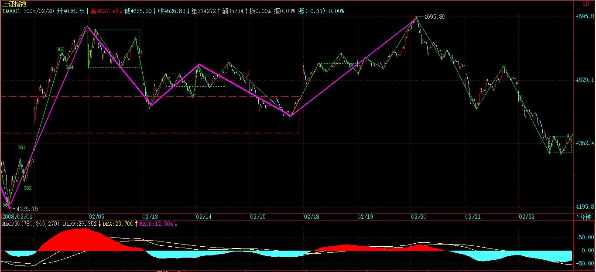
在下午2点后最终出现一个类底背驰。
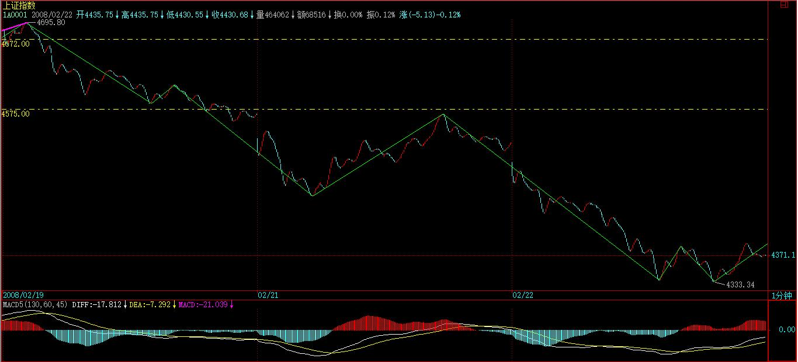
该类下跌出现三个类中枢，类背驰后的回拉如理论所要求的最低幅度回到最后一个类中枢，也就是至少制造了一个1分钟中枢。
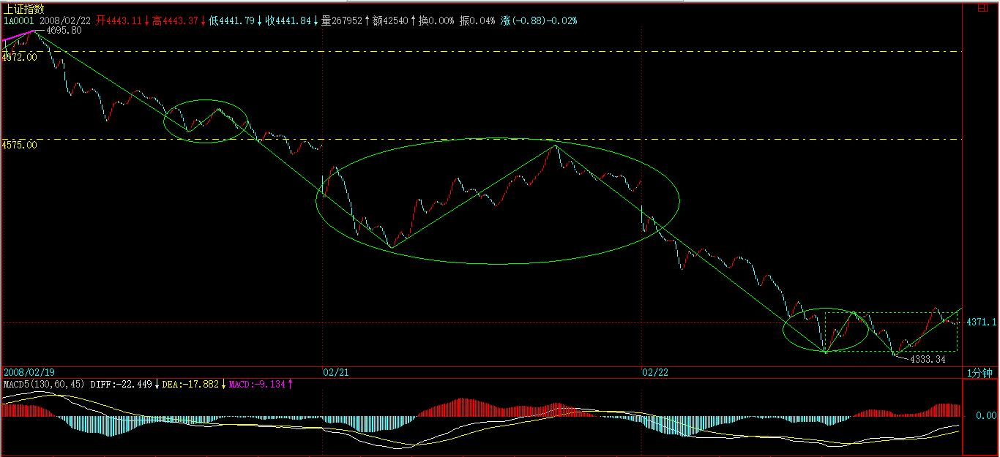
最坏的情况，这中枢是一个新的1分钟下跌的第一个中枢；最好的情况，就是该1分钟中枢出现第三类买点，然后至少回到类下跌的第二个类中枢范围。因此，下周初该中枢的演化决定了大盘短线的形态。
而实际上，大盘下周初的走势还将决定大盘的中线形态。在前几天大盘MACD出红柱子时，已经说过，就是必须注意放几天红柱子后再次放绿柱子的情况，这样就对应着大盘再次破底形成头肩底形态。
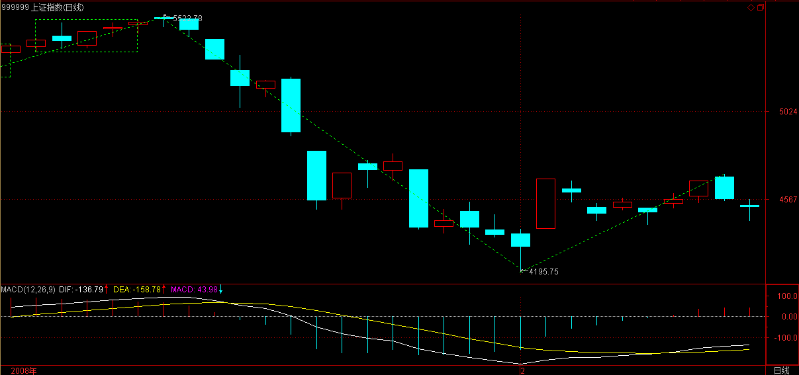
那么，下周，是否要出现这种情况，马上就要分晓。由于今天依然红柱子，因此还存在不出现绿柱子，红柱子再次伸长的情况，而这一切都将在下周有分晓。
以下的内容，在前面已经多次提过，这里不妨用单纯对MACD柱子可以面临的情况进行最完全的分类再表述一次：
一、再次绿柱子后比前一次更长，面积更大，这对应着原来从6124点下来的30分钟级别下跌不能形成背驰，【韶山映山红】如果“再次绿柱子后比前一次更长，面积更大，”，这一波下跌的柱子面积就超过6124那一波下跌，背驰就被破坏了。】
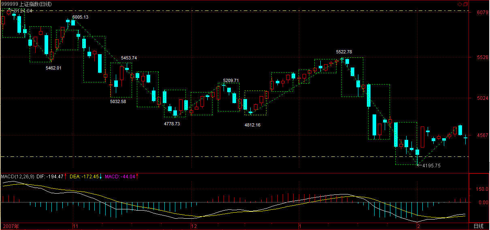
那么大盘最终的下跌空间完全可以合理地到达2500点，这也是我们所说以4300点为中轴的1800点震荡区间范围内的。
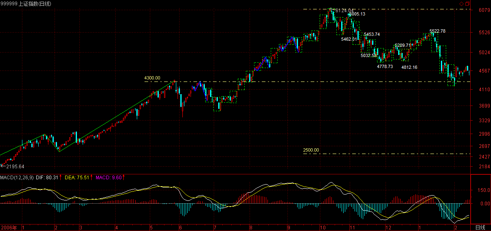
评论：这种情况，在技术上是合理的，但根据大的基本面情况，暂时看不到支持这种走势的可能，当然，就算这走势真的出现，也没什么大不了的，反正在真正破位下跌时，根据技术早走了，真有这样的下跌，等于一次巨大无比的机会在前面招手，那时候，又可以到砸锅卖铁买股票的时候了。
注意，基本面上其实还是完全存在这种可能性的，就是美国再次1987年，本ID已经多次表达希望看到这种情况的意愿，可惜这不是本ID所能决定的，那么我们就默默念多点咒语，把1987年给咒出来吧。【韶山映山红】2007年8月开始次贷危机，2008年9月开始金融风暴。】
二、绿柱子再出现但比前一次短且面积小，对应着6124点下来的30分钟下跌背驰，也就是最终结束。然后展开一轮30分钟级别的向上过程。【韶山映山红】如果“绿柱子再出现但比前一次短且面积小”，这一波下跌的柱子面积就不如6124那一波下跌，就有背驰。】
评论：这是从目前基本面角度最合理的走势，本ID反复强调，真的行情可能要等到3月份的会后，主要就是针对这种走势的，【韶山映山红】2008年3月全国两会。】从月线的角度，底分型并没有出现，也就是说，2、3月份在月线上的任务，就是把月线的底分型给弄出来，一旦这成功了，就有支持行情展开的最基本技术基础。【韶山映山红】2月的第一天就新低了，所以底分型至少要3月才能形成。如果不能形成底分型，也就不存在大级别转折的可能。】
三、不再出现绿柱子，红柱子再次延长，大盘直接上去。
评论：由于上次4195点对应的是一个30分钟中枢的盘整背驰，【韶山映山红】哪个“30分钟中枢”？下图是否正确？以后分析。★从纯技术的角度，这也可以构成底部，因为a+A+b+B+c里，c并不一定要存在的，可以直接从B就向上反转，这就对应着盘整背驰点的情况。【韶山映山红】a+A+b盘整背驰，然后盘整形成B，如果“直接从B就向上反转”，a+A+b+B就不是趋势，而是盘整。B是中枢分析角度的该级别中枢，不是走势类型分析的某走势的中枢。因为转折点之前是a+A+b盘整走势，转折点之后是下一个走势了。】
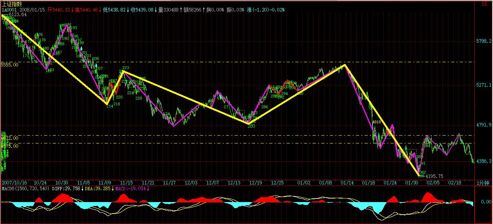
不过，这种情况，一般都需要基本面的支持。这次，能上来，主要是新基金的发行，但后面一系列的圈钱闹剧，使得新基金的发行基本面支持有所动摇，所以，这种情况，作为一种良好的愿望，还是可以努力去实践的，【韶山映山红】基本面分析方法。★】但这样直接的上去，只有一种后果，就是上升的空间会被压制。从纯技术的角度，一旦一个30分钟的直接上冲不能制造有效的突破，那么甚至可能形成一个日下跌的第一个中枢，这反而问题大了。【韶山映山红】已经有了30分钟盘整下，如果“一个30分钟的直接上冲不能制造有效的突破”，然后下跌，就“甚至可能形成一个日下跌的第一个中枢”。】
当然，二、三两种情况，都依然存在选择的可能，最终怎么选择，那是大盘自己的事情，我们只需要等大盘自己去选择，然后根据选择操作就可以。
操作上，已经多次反复说过，震荡中，就是要逢向上无力就抛，下来跌不动了再买，这样才是真正操作的节奏，如果你没有这个节奏，那干脆就坐小板凳看着。
对于大盘大的走势，去年展望中曾说过，大盘有很大可能今年创不了新高。从纯技术的角度，无论最后是哪种选择，30分钟的向上最大可能就是形成大的第二类卖点，6124点是第一类卖点，后面至少要回杀形成一个大的日中枢，所以，今年行情的困难程度，去年底已经说得很明确了，还是那句话，今年结束时，大多数股票的年K线都将是阴线，这点必须时刻记住。
所以，各位可以根据自己的情况，决定自己的操作：
一、如果觉得自己无法应付日以下级别的折腾，那么全年坐小板凳也是一个很好的选择。
二、觉得30分钟的走势还是可以应付的，就好好等待这30分钟向上机会的酝酿、展开，但一定要记住，现在犯点错误问题都不大，但一旦最终这向上开始后，最终一定要在顶背驰时出来，第二类卖点不走，后面是什么结果，看看昨天的580989在2点多0.76上那第二类卖点后，收盘在0.64就知道了。当然，第二类卖点大幅度调整后会有再次上涨的机会，但如果这调整不躲开，其痛苦程度可不是一般人能承受的。
个股方面，已经反复说过，今年除非有期货，否则大盘股都没什么大戏，而期货是本ID所深恶痛绝的，本ID今年的三大任务之一，就是不想看到期货。
今年就是题材股的天下，这已经说得太多了。诸如农业、创投、化工、医药、消费品、奥运、低价股投机股甚至军工等等都会反复表现的，而且，最近公布了重组的事情，因此，关于重组的题材将慢慢升温，重组题材的好处，就是熊市也可以炒得热火朝天，这是一个值得关注的方向。
一定要注意，今年行情，就算是个股也不可能像以前单边上去，肯定是反复震荡，来回折腾，除非那30分钟的向上过程最终展开，否则那种连续涨停，一去不回头的走势是很难出现的，操作上
一定要见好就收，大力来回折腾，这样才能把利润洗出来。
某种程度上，今年炒股票是一个体力活，要来回跑动，要特别勤快才行，这点必须注意。
周末，还是少点股票吧。
先下，再见。
(2008-02-23 11:30:21)
列宁本质上与马克思无关，列宁式的社会主义更和马克思无关，那不过是一个反资本主义的民族主义的资本主义过程，必然导致权力资本主义。列宁的社会主义，不过是以马克思的名义进行的一场上帝化、基督教化的人性闹剧，最终只证明了马克思结论的无比正确：社会主义不可能在一国单独实现。社会主义，只可能是资本主义全球化后的一个全球化事件，之前是一切所谓社会主义的闹剧，都不过是闹剧而已。
当然，列宁无疑是二十世纪最伟大的人物，正因为他无比天才的误读，才使得二十世纪如此地二十世纪了，没有列宁，整个二十世纪的历史将彻底被改写，因此，列宁的伟大是不用说明的，因为列宁就是整个二十世纪世界历史的源泉。
但历史的伟大，并不能改变其思想与哲学水平的低下，这里只说相关的物质定义问题，因为现在那些所谓的唯物主义者还在继续口淫这无比幼稚的定义，然后从这个定义出发，演绎出无数语言与现实的闹剧。
列宁的物质定义如下：“物质是标志客观实在的哲学范畴，这种客观实在是人通过感知感觉的，它不依赖于我们的感觉而存在，为我们的感觉所复写、摄影、反映。”
这个定义是一个典型的同语反复，因为，按照唯物主义的观点，人的感知感觉等都是物质的功能，这样，物质的定义里面，首先就隐含了一个物质的潜在前提，也就是用物质去定义物质的问题，这样的定义，无论如何都是失败的。
从欧几里德开始，最弱智的哲学家都知道，一个理论体系中的概念系统的定义，必须有一些不被定义的原始概念，否则将必要陷入循环定义的陷阱。因此，如果唯物主义要坚持所谓的物质第一性，那么这个物质就是不能被定义的，否则必然陷入循环定义。用人的感知感觉来定义物质，那么究竟谁是第一性的？这不明摆着承认人的感知感觉在概念上比物质要更靠前，更本原吗？这不是自打嘴巴吗？
好，且不说这定义的循环定义问题，就算这定义本身，也是充满矛盾。首先，什么叫我们的感觉？这世界上哪里存在着我们的感觉的玩意？感觉都是个体的，你的感觉和我的感觉不同，例如两人玩SM，显然感觉不同才能玩得起来，否则虐待的和受虐的感觉一样，那怎么玩？
站在个体感觉的角度，那么请问：你的感觉对于我的感觉来说是物质的吗？显然，你的感觉是一个客观实在，是我可以通过感知感觉的，它不依赖我的感觉而存在，为我的感觉所复写、摄影、反映。也就是说，你的感觉对于我来说，完全符合列宁的所谓物质定义，然后，所有非我的感觉，也可以如此符合。因此，我们可以创造这样一个哲学范畴，就是非我的感觉，这个哲学范畴，完全符合那所谓的物质定义，请问，这定义又定义了什么？
因此，如果列宁的所谓定义要成立，必须假设一种超个体的、上帝式的，所有人统一的我们的感觉的存在，这才是列宁物质定义的真正潜台词。所以，一切列宁式的社会主义闹剧就有了一个真正的哲学基础，就是一种超个体的、上帝式的，所有人统一的我们的感觉的存在，这种存在如果被假设了，那么，所有人就该有一个统一的理想、统一的社会蓝图、统一的革命，而为了这个所谓的理想、目标、蓝图，所有人都该统一地去牺牲、去为这个所谓的理想去卖命。对于这种理想，个体是不存在的，因为真正存在的是超个体的、上帝式的，所有人统一的我们的感觉。
这就是所有列宁式社会主义闹剧的真正思想根源。这样，我们就不难理解文革中十亿人共同进入一个节奏、一种疯狂闹剧了。所有的根源，都在列宁的所谓物质定义中了。
好了，列宁的哲学闹剧就不说了，但这个问题很重要，“你”、“你的”名、相、妄想，这一切究竟如何去展开，不戳穿类似闹剧的荒谬，你就永远在这语言的陷阱中打转，永无出期。
那么，真正的东西在哪里？下周告诉你。
(2008-02-25 15:23:55)
所谓事不过三，就算是管理层，连续三次用同一的招数，市场也不会领情了。而且，市场甚至会这样以为：连续发新基金，又不制止乱增发，难道是想让新基金去配合完成乱增发？一旦市场有了这样的念头，新基金就算有着良苦用心，也只会被认为良心大大地坏了。因此，今天市场用新低回应管理层的关怀，最恰当不过了。
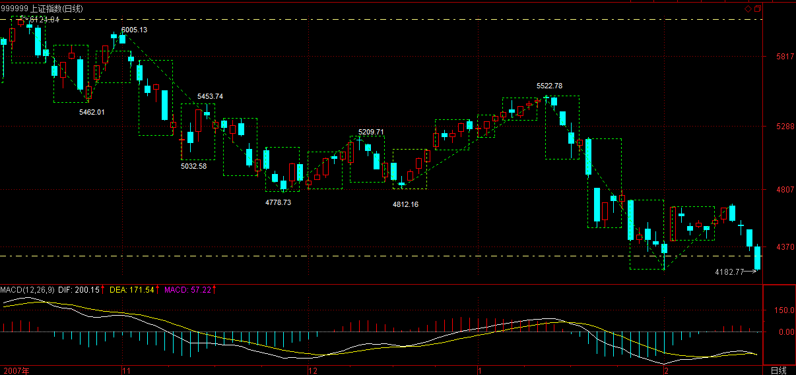
今天的走势，给那些政策迷好好上了一课，政策从来不是万能的，任何政策不过是市场的分力之一，最终决定市场的是合力。而所有的合力都写在走势之上，所以，今天的市场，如期地就把上周所分析的第三种走势给废掉了，【韶山映山红】“上周所分析的第三种走势”：“三、不再出现绿柱子，红柱子再次延长，大盘直接上去。”】后面，就是第二种走势的演化问题了，这也是我们反复强调的最有可能的走势。【韶山映山红】“二、绿柱子再出现但比前一次短且面积小，对应着6124点下来的30分钟下跌背驰，也就是最终结束。然后展开一轮30分钟级别的向上过程。”】
注意，卖出总在向上的过程中，也就是总在红柱子时。在上次刚出红柱子时，本ID已经明确说过了，一旦上冲没力，一定要先走，因此在4695点就算你没看出那5分钟的盘整背驰，【韶山映山红】“5分钟的盘整背驰”。这个5分钟中枢不是扩张升级形成的，而是走势类型重叠形成的。★】
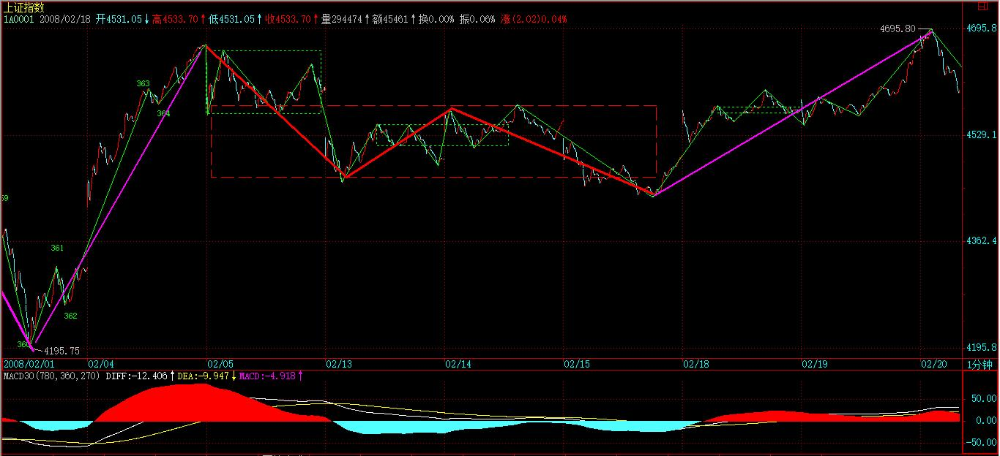
里面还包括一个1分钟盘整背驰的区间套，
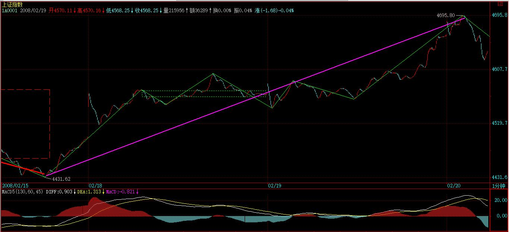
那么，浦发的消息也已经足以让你走人了。至于那些还要问绿柱子出来再走是不是太晚的人，永远不会懂得什么叫节奏。不懂得节奏，那就继续被市场调戏吧。
今天的短线走势是超级教科书的，一开始就跌破上周的1分钟中枢，那中枢，只能回到三个类中枢类下跌的最后一个，超级弱，因此跌破一点都不奇怪。
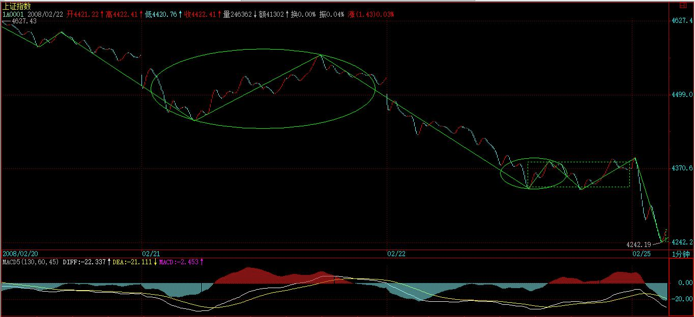
然后早上那最大的反弹构成第三类卖点，然后继续下跌，下午那波反弹完成第二个1分钟中枢的构造，
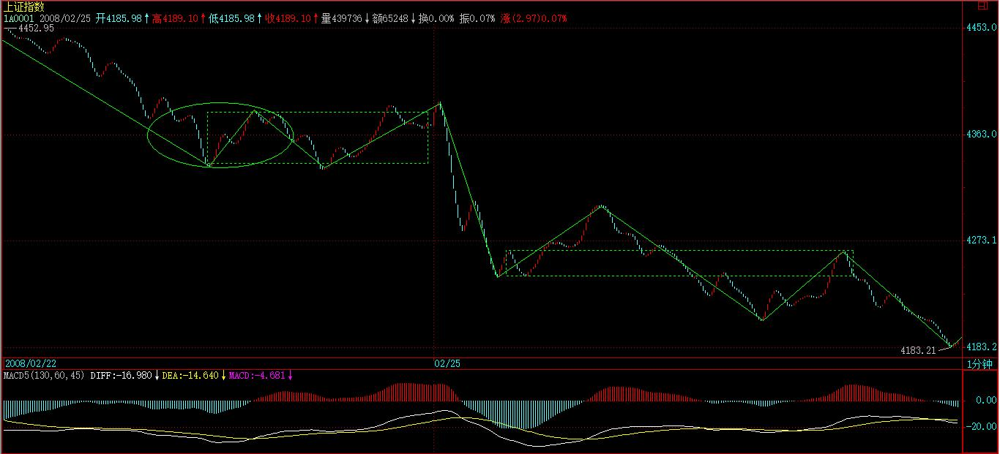
所以，4695点下来的走势，肯定至少是1分钟级别的下跌了。
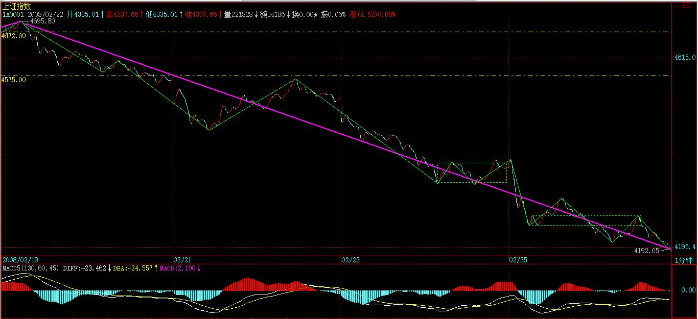
短线的机会，在这个1分钟下跌背驰后构成5分钟中枢的那个反弹，【韶山映山红】不一定有5分钟走势，一定有5分钟中枢。】当然，这反弹有多大力度，就看其后的基本面情况了。最坏的情况，这反弹就在今天所构成的1分钟中枢范围内结束，然后构成5分钟下跌的第一个中枢，【韶山映山红】1分钟的a+A+b+B+c形成5分钟的a~+A~，然后形成5分钟的下跌趋势。】一旦出现这种情况，后面的下跌还要猛烈。
当然，现在各种因素交织着，政策面方面经过今天很没面子的一天，是否有新的动作，这是决定最终形态的一个很重要的因数。其实，现在最大的利好不是印花税，而是把乱增发给规范，这才是稳定人心的立杆见影之举。现在就算印花税出来，请问，减少的印花税难道都马上给平安之流上供去吗？【韶山映山红】查股票交易印花税历史，2005年1月24日下调为1‰。2007年5月30日上调为3‰。2008年4月24日下调为1‰。2008年9月19日起，由双边征收改为单边征收，税率保持1‰，至今。】
现在，要密切注意个股了，赚钱是靠个股不是指数，看好那些趁机洗盘，强力吸纳的股票，技术上最安全的，就是离前期高位有一定距离，最近强力站稳而成交量一直保持一定数量的股票，因为新高的股票怕多头陷阱，而这种在下面横着的股票，有明显的吸纳迹象，就算补跌，也就是洗盘而已，正好继续买。当然，真能站稳新高的股票，只要前期没有暴炒过的，都是有投机价值的。
但一定要注意，底部不是一天构成的，必然会来回折腾，因此，操作上一定要把握节奏，在底部震荡中就把成本降下来，一旦行情真启动，个股刚开始涨，你的成本已经低了30%，这样不是最美妙的事情吗？
先下，再见。
本课目录
教你炒股票99：走势结构的两重表里关系3CPI公布成突破契机病从何来1大规模增发猛于虎资本市场必须维持生态平衡赚钱是靠个股而不是指数下周初决定大盘中线形态教你打坐25：列宁物质定义的荒谬新基金难敌乱增发